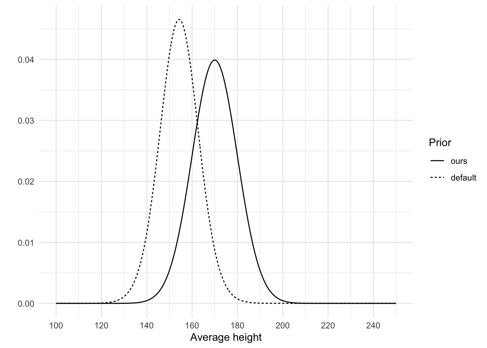
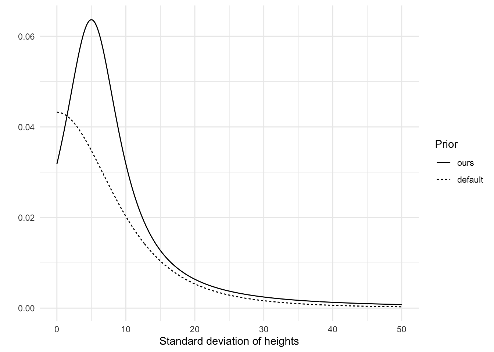
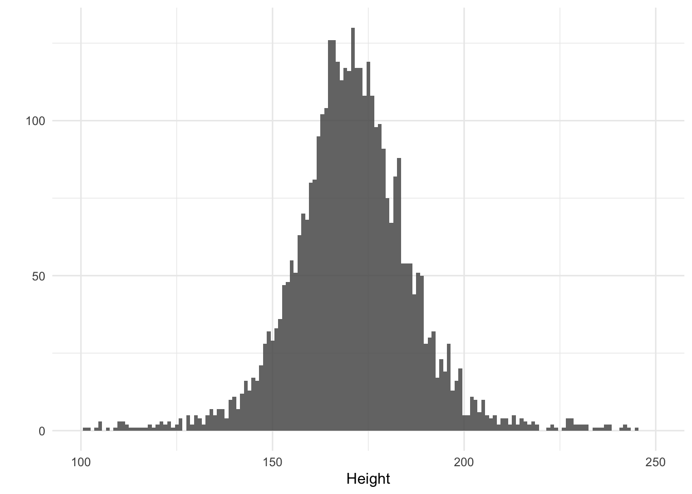
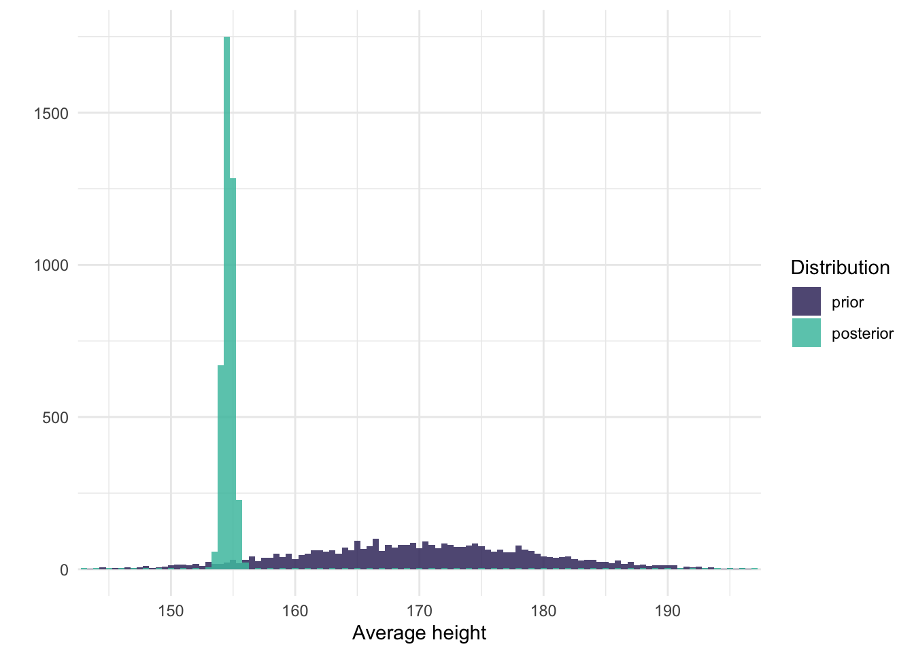
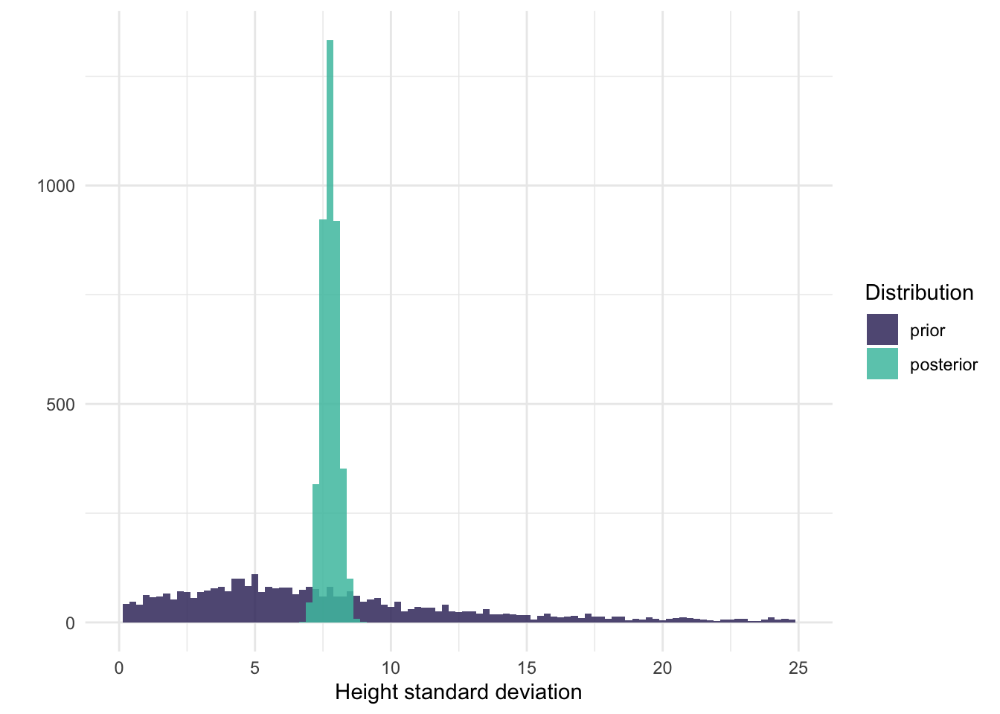
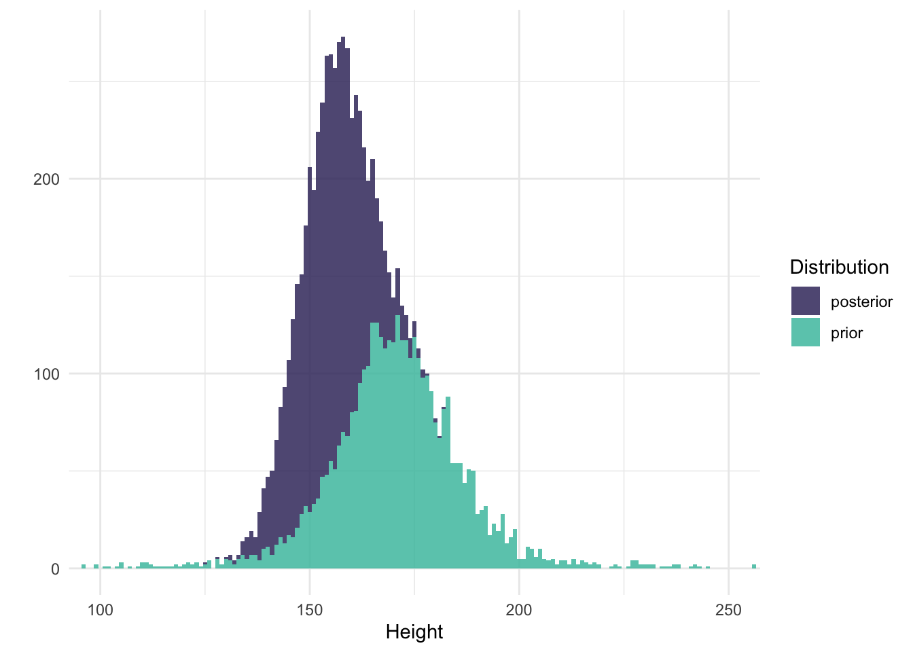

Code
# Load packages
library(tidyverse)
library(viridis)
library(brms)
library(tidybayes)
# Load data
data <- read_csv("Howell1.csv")
# Set seed
set.seed(4)
# Set options
theme_set(theme_minimal())November 24, 2022
This post is about figuring out how Bayesian statistics works and about developing a workflow to conduct Bayesian analyses. Specifically, I want to go through the process of running a Bayesian analysis and visualizing the different steps of that analysis in order to make sure I know what I’m doing. With a bit of luck this is educational and we’ll both end up learning how this works!
If you want to follow a long, run the following setup code.
The data we will use to play with is the same data Richard McElreath uses in Chapter 4 of his amazing book called Statistical Rethinking. The data consists of partial census data of the !Kung San, compiled from interviews conducted by Nancy Howell in the late 1960s. Just like in the book, we will focus only on people 18 years or older, so in the code below we create a subset of the data and store the result in a data frame called data.
| height | weight | age | male |
|---|---|---|---|
| 151.765 | 47.82561 | 63 | 1 |
| 139.700 | 36.48581 | 63 | 0 |
| 136.525 | 31.86484 | 65 | 0 |
| 156.845 | 53.04191 | 41 | 1 |
| 145.415 | 41.27687 | 51 | 0 |
| 163.830 | 62.99259 | 35 | 1 |
The general idea behind Bayesian statistics is that you start with some prior beliefs about the parameters of interest and then update those beliefs with the data. Note that this doesn’t mean that you have to personally accept those beliefs. You could simply postulate a belief to serve a particular purpose, such as assuming that a null effect is most likely even though you personally believe that there should be an effect. It does mean that when we want to analyze the data, we should start with defining our beliefs, rather than immediately jumping into running an analysis.
Let’s focus our first question on the heights in the data. We should begin by defining a belief that describes the different heights, which is based on our a priori knowledge of the heights of the Dobe area !Kung San. In other words, we have to describe what we believe their heights to be. This is unlike what you have to do with frequentist statistics, so this part might be a bit tricky.
To make it easier, we will use the amazing brms package to both define and inspect our beliefs, as well as use the data to update those beliefs.
If we start with analyzing only the heights data then we’ll be constructing an intercept-only model. You may be familiar with the R formula for this type of model: height ~ 1.
With this formula and the data we can actually use brms to figure out which priors we need to set by running the get_prior() function. This is probably the easiest way to figure which priors you need when you’re just starting out using brms.
| prior | class | coef | group | resp | dpar | nlpar | lb | ub | source |
|---|---|---|---|---|---|---|---|---|---|
| student_t(3, 154.3, 8.5) | Intercept | default | |||||||
| student_t(3, 0, 8.5) | sigma | 0 | default |
The output shows us that we need to set two priors, one for the Intercept and one for sigma. brms also already determined a default prior for each, but we’ll ignore that for now.
This is not the best way to think about which priors we need, though. Using the function will give you the answer, but it doesn’t really improve our understanding of why we need these two priors. In this case we also omitted an important specification of the heights, which is that we think they are normally distributed (the default assumption in get_prior()). So let’s instead write down our model in a different way, which explicitly specifies how we think the heights are distributed and which parameters we need to set priors on. If we think the heights are normally distributed, we define our model like this:
\[heights_i ∼ Normal(\mu, \sigma)\]
We explicitly note that the heights come from a normal distribution, which is determined by the parameters \(\mu\) and \(\sigma\). This then also immediately tells us that we need to set two priors, one on \(\mu\) and one on \(\sigma\).
In our intercept-only model, the \(\mu\) parameter refers to our intercept and the \(\sigma\) parameter refers to, well, sigma. It’s not often discussed in the literature I’m familiar with, but we’ll figure it out below. In fact, let’s discuss each of these parameters in turn and figure out what kind of prior makes sense.
The prior for the intercept indicates what we believe the average height of the !Kung San to be.
brms has set the default Intercept prior as a Student t-distribution with 3 degrees of freedom, a mean of 154.3 and a standard deviation of 8.5. That means brms starts off with a ‘belief’ that the average of the heights is 154.3, but with quite some uncertainty reflected in the standard deviation of 8.5 and the fact that the distribution is a Student t-distribution. A Student t-distribution has thicker tails compared to a normal distribution, meaning that lower and higher numbers are considered more likely compared to a normal distribution, at least when the degrees of freedom are low. At higher degrees of freedom, the t-distribution becomes more and more like the normal distribution. So, the thicker tails of the t-distributions means smaller and taller average heights are relatively more plausible.
But this is the default prior. brms determines this automatic prior by peeking at the data, which is not what we want to do. Instead, we should create our own.
So what do I believe the average height to be? As a Dutch person, I might be under the impression that the average height is around 175 centimeters. This is probably too tall to use as an average for the !Kung San because we’re known for being quite tall. So I think the average should be lower than 175, perhaps 170. I am not very sure, though. After all, I am far from an expert on people’s heights; I am only using my layman knowledge here. An average of 165 seems possible to me too. So let’s describe my belief in the form of a distribution in which multiple averages are possible, to varying extents. We should use a Student t-distribution with small degrees of freedom if we want to allow for the possibility of being very wrong (remember, it has thicker tails, so it assigns more probability to a wider range of average heights). We’re not super uncertain about people’s heights, though, so let’s use a normal distribution.
As we saw in defining our height model, a normal distribution requires that we set the \(\mu\) and the \(\sigma\). The \(\mu\) we already covered (i.e., 170), so that leaves \(\sigma\). Let’s set this to 10 and see what happens by visualizing this prior. Below I plot both the default brms prior and our own with \(\mu\) = 170 and \(\sigma\) = 10.
height_prior_intercept <- tibble(
height_mean = seq(from = 100, to = 250, by = 0.1),
ours = dnorm(height_mean, mean = 170, sd = 10),
default = dstudent_t(height_mean, df = 30, mu = 154.3, sigma = 8.5),
)
height_prior_intercept <- pivot_longer(
height_prior_intercept,
cols = -height_mean,
names_to = "prior"
)
ggplot(
height_prior_intercept,
aes(x = height_mean, y = value, linetype = fct_rev(prior))
) +
geom_line() +
labs(x = "Average height", y = "", linetype = "Prior") +
scale_x_continuous(breaks = seq(100, 250, 20))
Our prior indicates that we believe the average height to be higher than the default prior. In terms of the standard deviation, we both seem to be about equally uncertain about this average. To be fair, I think this prior of ours is not very plausible. Apparently we assign quite a chunk of plausibility to an average of 180 cm, or even 190 cm, which is very unlikely. An average of 160 cm is more plausible to me than an average of 180, so I should probably lower the mu, or use more of a skewed distribution. This is one of the benefits of visualizing the prior, it lets you think again about your prior so that you may improve on it. Regardless, we can keep the prior like this for now. We’ll see later that our data easily overshadows our prior.
What about the standard deviation? I find setting the standard deviation of the distribution of heights (not the mean of the heights) quite difficult. There are parts that are easy, such as the fact that the standard deviation has to be 0 or larger (it can’t be negative), but exactly how large it should be, I don’t know.
I do know it is unlikely to be close to 0, and unlikely to be very large. That’s because I know people’s heights do vary, so I know the sigma can’t be 0. I also know it’s not super large because we don’t see people who are taller than 2 meters very often. This means the peak should be somewhere above 0, with a tail to allow higher values but not too high. We can use a normal distribution for this with a mean above 0 and a particular standard deviation, and ignore everything that’s smaller than 0 (brms automatically ignores negative values for \(\sigma\)).
As I mentioned before, there is a downside of using a normal distribution, though. Normal distributions have long tails, but there is actually very little density in those tails. If we are quite uncertain about our belief about sigma, we should use a t-distribution, or perhaps even a cauchy distribution (actually, the cauchy distribution is a special case of the Student t-distribution; they are equivalent if the degree of freedom is 1). The lower the degrees of freedom, the more probability we assign to higher and lower values.
So, a t-distribution requires three parameters: \(\mu\), \(\sigma\), and the degrees of freedom. I set \(\mu\) to 5, \(\sigma\) to 5, and the degrees of freedom to 1. Below I plot this prior and brms’s default prior.
height_prior_sigma <- tibble(
height_sigma = seq(from = 0, to = 50, by = .1),
default = dstudent_t(height_sigma, df = 3, mu = 0, sigma = 8.5) * 2,
ours = dstudent_t(height_sigma, df = 1, mu = 5, sigma = 5) * 2
)
height_prior_sigma <- pivot_longer(
height_prior_sigma,
cols = -height_sigma,
names_to = "prior"
)
ggplot(
height_prior_sigma,
aes(x = height_sigma, y = value, linetype = fct_rev(prior))
) +
geom_line() +
labs(x = "Standard deviation of heights", y = "", linetype = "Prior")
As you can see, both distributions have longish tails, allowing for the possibility of high standard deviations. There are some notable differences between the two priors, though. Our prior puts more weight on a standard deviation larger than 0, while the default prior reflects a belief in which a standard deviation of 0 is most likely. However, both priors are quite weak. We’ll see that the data easily overshadows these priors.
Before we run the analysis, we can also check the results of both our priors on the distribution of heights.
Before we run our model, we should check what the effect is of both priors combined. Because we have set the priors we can simulate what we believe the data to be. This is one way to see whether our priors actually make sense. It is called a prior predictive check.
We can use brms to do this by running the brm() function. However, instead of running the actual model, we tell it to only sample from the prior.
We then use the tidybayes package to draw samples from the prior and plot these draws.
predictions_prior <- tibble(distribution = "prior")
predictions_prior <- add_predicted_draws(
newdata = predictions_prior,
object = model_height_prior,
value = "predicted_height"
)
ggplot(predictions_prior, aes(x = predicted_height)) +
geom_histogram(binwidth = 1, alpha = .85) +
xlim(100, 250) +
labs(x = "Height", y = "")
So, our priors result in a normal distribution of heights ranging from about 125 cm to 225 cm. That is too wide, but let’s run the model to see what happens.
We run the model with the code below. Notice that we sample from the prior so we can not only visualize our posterior later, but also the priors we have just defined.
After running the model, we first check whether the chains look good.
It seems like they do. The distributions look normal and the chains look like caterpillars, which means they’re sampling from the distribution space and that’s what we want.
We can call up the estimates and the 95% confidence intervals by printing the model object.
Family: gaussian
Links: mu = identity; sigma = identity
Formula: height ~ 1
Data: data (Number of observations: 352)
Draws: 4 chains, each with iter = 2000; warmup = 1000; thin = 1;
total post-warmup draws = 4000
Population-Level Effects:
Estimate Est.Error l-95% CI u-95% CI Rhat Bulk_ESS Tail_ESS
Intercept 154.63 0.41 153.80 155.42 1.00 3674 2697
Family Specific Parameters:
Estimate Est.Error l-95% CI u-95% CI Rhat Bulk_ESS Tail_ESS
sigma 7.77 0.30 7.19 8.39 1.00 3720 2921
Draws were sampled using sampling(NUTS). For each parameter, Bulk_ESS
and Tail_ESS are effective sample size measures, and Rhat is the potential
scale reduction factor on split chains (at convergence, Rhat = 1).Here we see the Intercept and sigma estimates, as well as their 95% CIs to summarize their posterior distribution. Apparently our posterior estimate for the Intercept is 154.63 and the estimate for \(\sigma\) is 7.77. We also see the 95% CIs, but let’s visualize these results instead.
Inspecting the chains also showed us the posterior distributions of the two parameters, but let’s create our own graphs that compare both the prior and posterior distributions.
results <- model_height %>%
gather_draws(b_Intercept, sigma, prior_Intercept, prior_sigma) %>%
ungroup() %>%
mutate(
parameter = if_else(str_detect(.variable, "sigma"), "sigma", "intercept"),
distribution = if_else(str_detect(.variable, "prior"), "prior", "posterior")
)
results_intercept <- filter(results, parameter == "intercept")
results_sigma <- filter(results, parameter == "sigma")
ggplot(results_intercept, aes(x = .value, fill = fct_rev(distribution))) +
geom_histogram(binwidth = 1, position = "identity", alpha = .85) +
xlim(145, 195) +
labs(x = "Average height", y = "", fill = "Distribution") +
scale_fill_viridis(option = "mako", discrete = TRUE, begin = .25, end = .75)
Here we see that the posterior distribution of average heights is now much more narrow and centered around 155 cm. So not only should we switch from thinking the average is a lot lower than 170, we can also be much more confident about the mean.
How about sigma?
ggplot(results_sigma, aes(x = .value, fill = fct_rev(distribution))) +
geom_histogram(binwidth = 0.25, position = "identity", alpha = .85) +
xlim(0, 25) +
labs(x = "Height standard deviation", y = "", fill = "Distribution") +
scale_fill_viridis(option = "mako", discrete = TRUE, begin = .25, end = .75)
Similarly, we see that the posterior for sigma is also much more narrow and around 8.
A final step is to visualize the posterior distribution of all heights (posterior predictive check) and compare it the distribution of heights based on our priors (the prior predictive check).
predictions_posterior <- tibble(distribution = "posterior")
predictions_posterior <- add_predicted_draws(
newdata = predictions_posterior,
object = model_height,
value = "predicted_height"
)
predictions <- bind_rows(predictions_prior, predictions_posterior)
ggplot(predictions, aes(x = predicted_height, fill = distribution)) +
geom_histogram(binwidth = 1, alpha = .85, position = "identity") +
xlim(100, 250) +
labs(x = "Height", y = "", fill = "Distribution") +
scale_fill_viridis(option = "mako", discrete = TRUE, begin = .25, end = .75)
---
title: "Figuring out Bayesian statistics"
description: "Bayesian statistics seems pretty cool, but I don't really know how to apply it yet. In this blog post, I try to setup a Bayesian workflow that teaches both you and me how to do it."
date: 2022-11-24
categories:
- statistics
- tutorial
- Bayesian statistics
- regression
code-fold: true
code-tools: true
toc: true
format:
html:
df-print: kable
---
This post is about figuring out how Bayesian statistics works and about developing a workflow to conduct Bayesian analyses. Specifically, I want to go through the process of running a Bayesian analysis and visualizing the different steps of that analysis in order to make sure I know what I'm doing. With a bit of luck this is educational and we'll both end up learning how this works!
If you want to follow a long, run the following setup code.
```{r}
#| label: setup
#| message: false
# Load packages
library(tidyverse)
library(viridis)
library(brms)
library(tidybayes)
# Load data
data <- read_csv("Howell1.csv")
# Set seed
set.seed(4)
# Set options
theme_set(theme_minimal())
```
The data we will use to play with is the same data Richard McElreath uses in Chapter 4 of his amazing book called [Statistical Rethinking](https://xcelab.net/rm/statistical-rethinking/ "Statistical Rethinking website"). The data consists of partial census data of the !Kung San, compiled from interviews conducted by Nancy Howell in the late 1960s. Just like in the book, we will focus only on people 18 years or older, so in the code below we create a subset of the data and store the result in a data frame called `data`.
```{r}
#| label: data
#| tbl-cap: Partial census data for the Dobe area !Kung San compiled by Nancy Howell in the late 1960s.
# Only select people older than 18
data <- filter(data, age >= 18)
# Show the first rows
head(data)
```
The general idea behind Bayesian statistics is that you start with some prior beliefs about the parameters of interest and then update those beliefs with the data. Note that this doesn't mean that you have to personally accept those beliefs. You could simply postulate a belief to serve a particular purpose, such as assuming that a null effect is most likely even though you personally believe that there should be an effect. It does mean that when we want to analyze the data, we should start with defining our beliefs, rather than immediately jumping into running an analysis.
Let's focus our first question on the heights in the data. We should begin by defining a belief that describes the different heights, which is based on our a priori knowledge of the heights of the Dobe area !Kung San. In other words, we have to describe what we believe their heights to be. This is unlike what you have to do with frequentist statistics, so this part might be a bit tricky.
To make it easier, we will use the amazing `brms` package to both define and inspect our beliefs, as well as use the data to update those beliefs.
## An intercept-only model
If we start with analyzing only the heights data then we'll be constructing an intercept-only model. You may be familiar with the R formula for this type of model: `height ~ 1`.
With this formula and the data we can actually use `brms` to figure out which priors we need to set by running the `get_prior()` function. This is probably the easiest way to figure which priors you need when you're just starting out using `brms`.
```{r}
#| label: get-prior
get_prior(height ~ 1, data = data)
```
The output shows us that we need to set two priors, one for the Intercept and one for sigma. `brms` also already determined a default prior for each, but we'll ignore that for now.
This is not the best way to think about which priors we need, though. Using the function will give you the answer, but it doesn't really improve our understanding of why we need these two priors. In this case we also omitted an important specification of the heights, which is that we think they are normally distributed (the default assumption in `get_prior()`). So let's instead write down our model in a different way, which explicitly specifies how we think the heights are distributed and which parameters we need to set priors on. If we think the heights are normally distributed, we define our model like this:
$$heights_i ∼ Normal(\mu, \sigma)$$
We explicitly note that the heights come from a normal distribution, which is determined by the parameters $\mu$ and $\sigma$. This then also immediately tells us that we need to set two priors, one on $\mu$ and one on $\sigma$.
In our intercept-only model, the $\mu$ parameter refers to our intercept and the $\sigma$ parameter refers to, well, sigma. It's not often discussed in the literature I'm familiar with, but we'll figure it out below. In fact, let's discuss each of these parameters in turn and figure out what kind of prior makes sense.
### The Intercept prior ($\mu$)
The prior for the intercept indicates what we believe the *average* height of the !Kung San to be.
`brms` has set the default Intercept prior as a Student *t*-distribution with 3 degrees of freedom, a mean of 154.3 and a standard deviation of 8.5. That means `brms` starts off with a 'belief' that the *average* of the heights is 154.3, but with quite some uncertainty reflected in the standard deviation of 8.5 and the fact that the distribution is a Student *t*-distribution. A Student *t*-distribution has thicker tails compared to a normal distribution, meaning that lower and higher numbers are considered more likely compared to a normal distribution, at least when the degrees of freedom are low. At higher degrees of freedom, the *t*-distribution becomes more and more like the normal distribution. So, the thicker tails of the *t*-distributions means smaller and taller average heights are relatively more plausible.
But this is the default prior. `brms` determines this automatic prior by peeking at the data, which is not what we want to do. Instead, we should create our own.
So what do I believe the average height to be? As a Dutch person, I might be under the impression that the average height is around 175 centimeters. This is probably too tall to use as an average for the !Kung San because we're known for being quite tall. So I think the average should be lower than 175, perhaps 170. I am not very sure, though. After all, I am far from an expert on people's heights; I am only using my layman knowledge here. An average of 165 seems possible to me too. So let's describe my belief in the form of a distribution in which multiple averages are possible, to varying extents. We should use a Student *t*-distribution with small degrees of freedom if we want to allow for the possibility of being very wrong (remember, it has thicker tails, so it assigns more probability to a wider range of average heights). We're not super uncertain about people's heights, though, so let's use a normal distribution.
As we saw in defining our height model, a normal distribution requires that we set the $\mu$ and the $\sigma$. The $\mu$ we already covered (i.e., 170), so that leaves $\sigma$. Let's set this to 10 and see what happens by visualizing this prior. Below I plot both the default `brms` prior and our own with $\mu$ = 170 and $\sigma$ = 10.
```{r}
#| label: height-mu-prior
#| fig-cap: Two priors for $\mu$
height_prior_intercept <- tibble(
height_mean = seq(from = 100, to = 250, by = 0.1),
ours = dnorm(height_mean, mean = 170, sd = 10),
default = dstudent_t(height_mean, df = 30, mu = 154.3, sigma = 8.5),
)
height_prior_intercept <- pivot_longer(
height_prior_intercept,
cols = -height_mean,
names_to = "prior"
)
ggplot(
height_prior_intercept,
aes(x = height_mean, y = value, linetype = fct_rev(prior))
) +
geom_line() +
labs(x = "Average height", y = "", linetype = "Prior") +
scale_x_continuous(breaks = seq(100, 250, 20))
```
Our prior indicates that we believe the average height to be higher than the default prior. In terms of the standard deviation, we both seem to be about equally uncertain about this average. To be fair, I think this prior of ours is not very plausible. Apparently we assign quite a chunk of plausibility to an average of 180 cm, or even 190 cm, which is very unlikely. An average of 160 cm is more plausible to me than an average of 180, so I should probably lower the mu, or use more of a skewed distribution. This is one of the benefits of visualizing the prior, it lets you think again about your prior so that you may improve on it. Regardless, we can keep the prior like this for now. We'll see later that our data easily overshadows our prior.
### The sigma prior ($\sigma$)
What about the standard deviation? I find setting the standard deviation of the distribution of heights (not the mean of the heights) quite difficult. There are parts that are easy, such as the fact that the standard deviation has to be 0 or larger (it can't be negative), but exactly how large it should be, I don't know.
I do know it is unlikely to be close to 0, and unlikely to be very large. That's because I know people's heights do vary, so I know the sigma can't be 0. I also know it's not super large because we don't see people who are taller than 2 meters very often. This means the peak should be somewhere above 0, with a tail to allow higher values but not too high. We can use a normal distribution for this with a mean above 0 and a particular standard deviation, and ignore everything that's smaller than 0 (`brms` automatically ignores negative values for $\sigma$).
As I mentioned before, there is a downside of using a normal distribution, though. Normal distributions have long tails, but there is actually very little density in those tails. If we are quite uncertain about our belief about sigma, we should use a *t*-distribution, or perhaps even a cauchy distribution (actually, the cauchy distribution is a special case of the Student *t*-distribution; they are equivalent if the degree of freedom is 1). The lower the degrees of freedom, the more probability we assign to higher and lower values.
So, a *t*-distribution requires three parameters: $\mu$, $\sigma$, and the degrees of freedom. I set $\mu$ to 5, $\sigma$ to 5, and the degrees of freedom to 1. Below I plot this prior and `brms`'s default prior.
```{r}
#| label: height-sigma-prior
#| fig-cap: Two priors for $\sigma$
height_prior_sigma <- tibble(
height_sigma = seq(from = 0, to = 50, by = .1),
default = dstudent_t(height_sigma, df = 3, mu = 0, sigma = 8.5) * 2,
ours = dstudent_t(height_sigma, df = 1, mu = 5, sigma = 5) * 2
)
height_prior_sigma <- pivot_longer(
height_prior_sigma,
cols = -height_sigma,
names_to = "prior"
)
ggplot(
height_prior_sigma,
aes(x = height_sigma, y = value, linetype = fct_rev(prior))
) +
geom_line() +
labs(x = "Standard deviation of heights", y = "", linetype = "Prior")
```
As you can see, both distributions have longish tails, allowing for the possibility of high standard deviations. There are some notable differences between the two priors, though. Our prior puts more weight on a standard deviation larger than 0, while the default prior reflects a belief in which a standard deviation of 0 is most likely. However, both priors are quite weak. We'll see that the data easily overshadows these priors.
Before we run the analysis, we can also check the results of both our priors on the distribution of heights.
### A prior predictive check
Before we run our model, we should check what the effect is of both priors combined. Because we have set the priors we can simulate what we believe the data to be. This is one way to see whether our priors actually make sense. It is called a prior predictive check.
We can use `brms` to do this by running the `brm()` function. However, instead of running the actual model, we tell it to only sample from the prior.
```{r}
#| label: height-prior
model_height_prior <- brm(
height ~ 1,
data = data,
family = gaussian,
prior = c(
prior(normal(170, 10), class = "Intercept"),
prior(cauchy(5, 5), class = "sigma")
),
cores = 4,
seed = 4,
sample_prior = "only",
file = "models/model_height_prior.rds"
)
```
We then use the `tidybayes` package to draw samples from the prior and plot these draws.
```{r}
#| label: prior-predictive
#| fig-cap: Prior predictive check
#| warning: false
predictions_prior <- tibble(distribution = "prior")
predictions_prior <- add_predicted_draws(
newdata = predictions_prior,
object = model_height_prior,
value = "predicted_height"
)
ggplot(predictions_prior, aes(x = predicted_height)) +
geom_histogram(binwidth = 1, alpha = .85) +
xlim(100, 250) +
labs(x = "Height", y = "")
```
So, our priors result in a normal distribution of heights ranging from about 125 cm to 225 cm. That is too wide, but let's run the model to see what happens.
### Running the model
We run the model with the code below. Notice that we sample from the prior so we can not only visualize our posterior later, but also the priors we have just defined.
```{r}
#| label: intercept-model
model_height <- brm(data = data,
family = gaussian,
height ~ 1,
prior = c(
prior(normal(170, 10), class = "Intercept"),
prior(cauchy(5, 5), class = "sigma")
),
cores = 4,
seed = 4,
sample_prior = TRUE,
file = "models/model_height.rds"
)
```
After running the model, we first check whether the chains look good.
```{r}
#| label: chains
plot(model_height)
```
It seems like they do. The distributions look normal and the chains look like caterpillars, which means they're sampling from the distribution space and that's what we want.
We can call up the estimates and the 95% confidence intervals by printing the model object.
```{r}
#| label: model
summary(model_height)
```
Here we see the Intercept and sigma estimates, as well as their 95% CIs to summarize their posterior distribution. Apparently our posterior estimate for the Intercept is `r round(mean(as_tibble(model_height)$b_Intercept), 2)` and the estimate for $\sigma$ is `r round(mean(as_tibble(model_height)$sigma), 2)`. We also see the 95% CIs, but let's visualize these results instead.
### Comparing the prior and posterior distributions
Inspecting the chains also showed us the posterior distributions of the two parameters, but let's create our own graphs that compare both the prior and posterior distributions.
```{r}
#| label: prior-posterior-mu
#| fig-cap-: Prior vs. posterior for $\mu$
#| warning: false
results <- model_height %>%
gather_draws(b_Intercept, sigma, prior_Intercept, prior_sigma) %>%
ungroup() %>%
mutate(
parameter = if_else(str_detect(.variable, "sigma"), "sigma", "intercept"),
distribution = if_else(str_detect(.variable, "prior"), "prior", "posterior")
)
results_intercept <- filter(results, parameter == "intercept")
results_sigma <- filter(results, parameter == "sigma")
ggplot(results_intercept, aes(x = .value, fill = fct_rev(distribution))) +
geom_histogram(binwidth = 1, position = "identity", alpha = .85) +
xlim(145, 195) +
labs(x = "Average height", y = "", fill = "Distribution") +
scale_fill_viridis(option = "mako", discrete = TRUE, begin = .25, end = .75)
```
Here we see that the posterior distribution of average heights is now much more narrow and centered around `r round(mean(as_tibble(model_height)$b_Intercept))` cm. So not only should we switch from thinking the average is a lot lower than 170, we can also be much more confident about the mean.
How about sigma?
```{r}
#| label: prior-posterior-sigma
#| fig-cap-: Prior vs. posterior for $\sigma$
#| warning: false
ggplot(results_sigma, aes(x = .value, fill = fct_rev(distribution))) +
geom_histogram(binwidth = 0.25, position = "identity", alpha = .85) +
xlim(0, 25) +
labs(x = "Height standard deviation", y = "", fill = "Distribution") +
scale_fill_viridis(option = "mako", discrete = TRUE, begin = .25, end = .75)
```
Similarly, we see that the posterior for sigma is also much more narrow and around `r round(mean(as_tibble(model_height)$sigma))`.
A final step is to visualize the posterior distribution of all heights (posterior predictive check) and compare it the distribution of heights based on our priors (the prior predictive check).
```{r}
#| label: prior-posterior-predictive-check
#| fig-cap: Prior and posterior predictive check
#| warning: false
predictions_posterior <- tibble(distribution = "posterior")
predictions_posterior <- add_predicted_draws(
newdata = predictions_posterior,
object = model_height,
value = "predicted_height"
)
predictions <- bind_rows(predictions_prior, predictions_posterior)
ggplot(predictions, aes(x = predicted_height, fill = distribution)) +
geom_histogram(binwidth = 1, alpha = .85, position = "identity") +
xlim(100, 250) +
labs(x = "Height", y = "", fill = "Distribution") +
scale_fill_viridis(option = "mako", discrete = TRUE, begin = .25, end = .75)
```